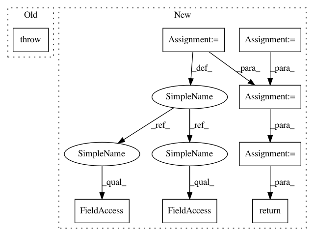

fdf356a91622033dc8e88ccf64c2f421e9d3a8a8,pycox/cox.py,CoxTime,predict_cumulative_hazard_at_times,#CoxTime#,833
Before Change
return np.exp(-self.predict_cumulative_hazard(df, baseline_hazard_, batch_size, verbose))
def predict_cumulative_hazard_at_times(self, times, df, batch_size=512, return_df=True):
raise NotImplementedError("This isn"t as relevant when we have broken the propotionality.")
def concordance_index(self, df, g_preds=None, batch_size=256):
raise NotImplementedError()
After Change
"""
assert hasattr(self, "baseline_hazard_"), "Need to fit model first."
if not hasattr(times, "__iter__"):
times = [times]
cum_haz = self.predict_cumulative_hazard(df, baseline_hazard_, batch_size, verbose)
times_idx = search_sorted_idx(cum_haz.index.values, times)
cum_haz = cum_haz.iloc[times_idx]
if return_df:
return cum_haz
return cum_haz.as_matrix()
def predict_survival_at_times(self, times, df, baseline_hazard_=None, batch_size=512,
return_df=True, verbose=0):
"""Predict survival function at given times.
In pattern: SUPERPATTERN
Frequency: 3
Non-data size: 8
Instances
Project Name: havakv/pycox
Commit Name: fdf356a91622033dc8e88ccf64c2f421e9d3a8a8
Time: 2018-02-27
Author: kvamme@samba8.ad.nr.no
File Name: pycox/cox.py
Class Name: CoxTime
Method Name: predict_cumulative_hazard_at_times
Project Name: SPFlow/SPFlow
Commit Name: 6967cc5df1801b8f5a01110417b38495896d75e0
Time: 2018-10-23
Author: nicola.dimauro@uniba.it
File Name: src/spn/structure/leaves/cltree/Inference.py
Class Name:
Method Name: cltree_likelihood
Project Name: havakv/pycox
Commit Name: fdf356a91622033dc8e88ccf64c2f421e9d3a8a8
Time: 2018-02-27
Author: kvamme@samba8.ad.nr.no
File Name: pycox/cox.py
Class Name: CoxTime
Method Name: predict_cumulative_hazard_at_times
Project Name: keras-team/keras
Commit Name: b4e01aee7f4a9b815542c77c3d537e7ba66dd8c9
Time: 2019-03-14
Author: abhai.dilip@gmail.com
File Name: keras/backend/cntk_backend.py
Class Name:
Method Name: cumsum